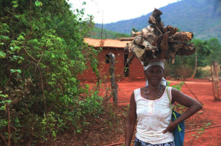

Bem-vindo ao portal do maior território quilombola remanescente do Brasil [243, 245]. Um espaço de ancestralidade, soberania e convivência harmoniosa com o Cerrado, erguido por homens e mulheres que transformaram as fendas das serras em trincheiras de liberdade [95, 165, 166].
A história do povo Kalunga se inicia no século XVIII [165, 284]. Com a implantação do ciclo minerador das "Minas dos Goyazes" pelos bandeirantes, milhares de africanos foram escravizados e submetidos a condições violentas de exploração nas jazidas de ouro de Cavalcante, Morro do Chapéu (Monte Alegre) e Arraias [165, 284].
Recusando a submissão, grupos de negros escravizados empreenderam fugas estratégicas em direção aos vales profundos e serras de difícil acesso formados pelas bacias dos rios Paranã e das Almas [94, 165, 166, 185]. Nesse isolamento geográfico protetor, que se estende por cerca de 263,2 mil hectares no Nordeste Goiano, nossos ancestrais fundaram as bases de um território autônomo, assentado na ajuda mútua e na liberdade [94, 95, 121, 165, 166, 186].
O nome Kalunga, assumido com orgulho pela comunidade, carrega múltiplos significados ancestrais [105, 106, 164]:
O Sítio Histórico e Patrimônio Cultural Kalunga abrange cerca de 263.200 hectares divididos entre três municípios principais [252, 305]:
O relevo íngreme da Chapada dos Veadeiros serviu como barreira geográfica natural para a proteção e preservação das comunidades [94, 95].
O futuro do território Kalunga floresce a partir da união de suas gerações e do empoderamento das mulheres e jovens quilombolas [47]. Em comunidades como Extrema e Levantado (no município de Iaciara-GO) — fundadas a partir de uma gleba de terra comprada de forma coletiva por nove irmãos entre 1932 e 1933 [50] —, o povoado mantém vivas as suas raízes por meio da transmissão oral da história [13, 50, 51].
Lideradas por matriarcas respeitadas como Dona Catarina (80 anos) [51] e patriarcas como Seu Anastácio [53, 56], as comunidades resistem contra as tentativas externas de descaracterizar suas tradições de fé e trabalho [54]. Sob as bênçãos dos mais velhos, jovens e mulheres participam de oficinas comunitárias para a confecção de instrumentos rústicos e o aprendizado das danças tradicionais da Sussia e do Curraleiro [47, 56].
"Cultura é qualquer benefício que dê resultado para a humanidade, por exemplo, a roça."

"As comunidades do Sítio Kalunga são normalmente matriarcais, e na maioria das vezes a mulher tem o papel de trazer os mantimentos diários para a casa."
Os saberes tradicionais garantem o equilíbrio do bioma Cerrado e a segurança alimentar das famílias.
A biodiversidade do Cerrado é uma farmácia viva. Além de dar nome à comunidade, a planta medicinal Kalunga (raiz amarga usada no combate a males gástricos) exemplifica o conhecimento da botânica nativa preservado oralmente por parteiras, benzedeiras e rezadores [174, 234, 238].
A agricultura tradicional Kalunga fundamenta-se na roça de subsistência com rotação de terras e descanso de solo [58]. Essa prática milenar evita a erosão e mantém a fertilidade natural sem a necessidade de defensivos químicos [58, 234].
O território abriga nascentes cruciais para as bacias dos rios Paranã e das Almas [94]. As regras comunitárias de conservação proíbem desmatamentos nas margens de rios e córregos, mantendo a pureza das águas da Chapada [94, 95].
O Sítio Histórico Kalunga atrai o interesse frequente de pesquisadores, estudantes e fotógrafos de diversas partes do mundo [210, 227]. Para assegurar uma representação digna, este manifesto fundamenta-se nas diretrizes das lideranças comunitárias, como Vilmar Souza Costa [210]:
Rejeição a pesquisas que utilizem a comunidade apenas como objeto sem gerar retorno prático, cultural ou econômico para as famílias [210].
Não compactuar com a folclorização ou estereótipos. O povo Kalunga é agente ativo e soberano da sua própria história e voz [141, 155].
Respeito irrestrito ao direito de cada morador de não querer ser fotografado, filmado ou entrevistado sem consentimento livre e prévio [188, 210].